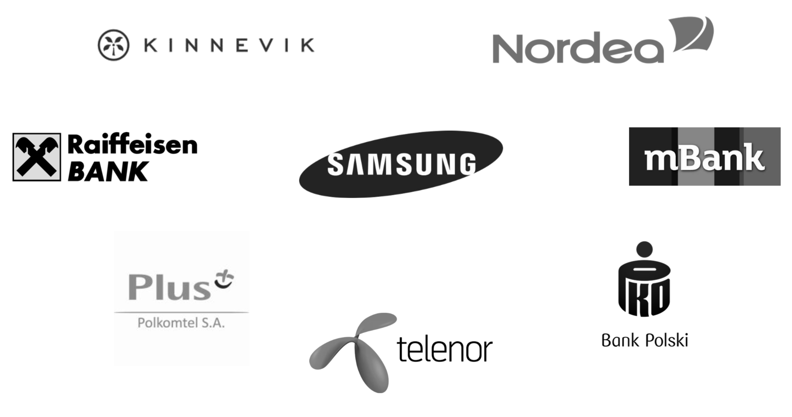

We are a small team of enthusiastic developers and professionals with a lot of software development and business experience under our belts. We are based in Warsaw, Poland, and are specialising in catering to software development needs of companies based in Sweden, Norway and Denmark.
Karol is a business oriented software developer with 7 years of Android app development, programming in Kotlin since 2015. His experience working in Sweden and Poland with both startups and corporations gave him a powerful understanding of the market. He has bootstrapped an app that has recently surpassed 150k+ daily users, available on Google Play. He is an open source contributor and has niche experience with VPN api, tunneling, and peer to peer networks.
Jakub is a software architect with 13 years of experience in enterprise systems development for leading financial and telecommunication companies in Poland. This experience gave him understanding of full IT project development lifecycle and let him learn best practices in industry. Passionate designer and programmer always eager to learn new technologies and discover innovative ways of solving problems. Business oriented, reliable partner ready to listen to your needs and share his knowledge.
We are not salesmen - we actively work on projects. Our approach is to get technical as early as possible, in order to save time and avoid misunderstandings. Our immediate area of expertise is mobile and cloud, and we maintain contacts with talented developers of various specialities in Poland, so we can scale if needed.
We don't just make apps. We develop them according to the best practices and modern standards, and if necessary, help you cut corners without sacrificing your product’s future.
We take care of it all, should you require so. Our engineers have acquired domain specific knowledge, and continuous growth is at the core of our philosophy. We can deliver backend for your app too, and deploy it to the cloud of your choice.
We do things the modern way, with quick iterations to keep you in the loop. Yet, thanks to our extensive connections with software companies in Poland, we provide you the stability of a big corporation, so you can enjoy the benefits of both worlds.
We don’t just take all projects that come across. We want to understand your needs first, so that we can can be sure you are making the right choice, and we are the right partner for you.
We work agile, with Scrum or Kanban, depending on the needs. Oh, and we give a warranty for all our services.
We've worked with various companies of different size in the past, from startups in Sweden and Poland, to global corporations. Here are some of them:
